Стулья из красного дерева — это изысканный элемент интерьера,
который добавит роскоши и элегантности вашему дому. Изготовленные из
высококачественного массива красного дерева, эти стулья обладают прочностью,
долговечностью и устойчивостью к внешним воздействиям.
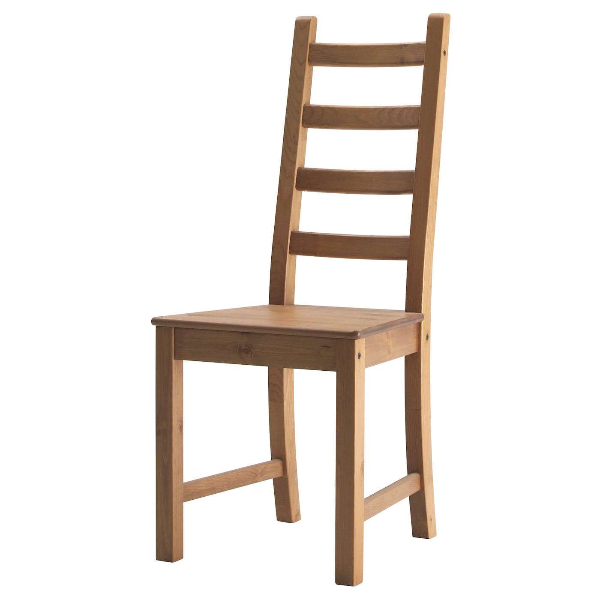
Дубовые стулья — это стильный и функциональный элемент интерьера,
который сочетает в себе элегантность и прочность. Изготовленные из
натурального дуба, эти стулья прослужат вам долгие годы, сохраняя свою
первоначальную красоту и качество.
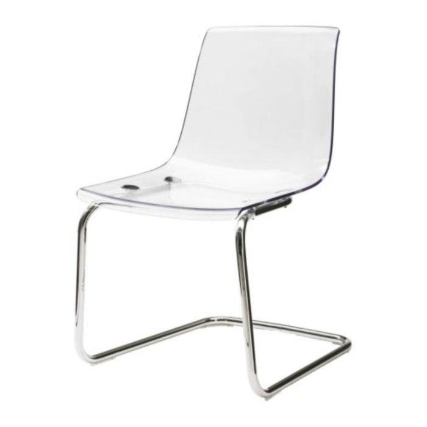
Стеклянные стулья — это стильный и элегантный элемент интерьера,
который добавляет воздушность и лёгкость пространству.
Они изготовлены из высококачественного стекла, прочного и устойчивого
к внешним воздействиям.
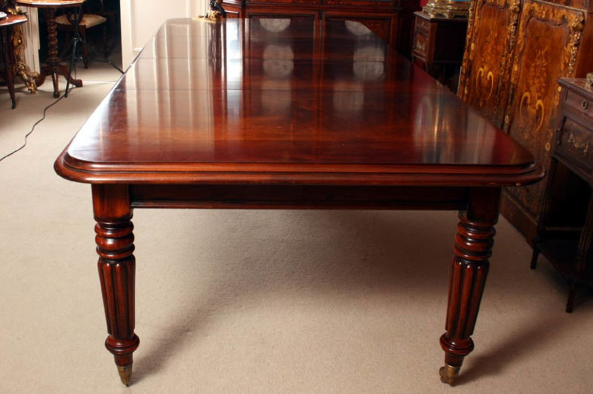
Стол из красного дерева — это изысканный предмет мебели,
выполненный из высококачественного материала. Он обладает элегантным
дизайном и станет отличным дополнением к любому интерьеру.
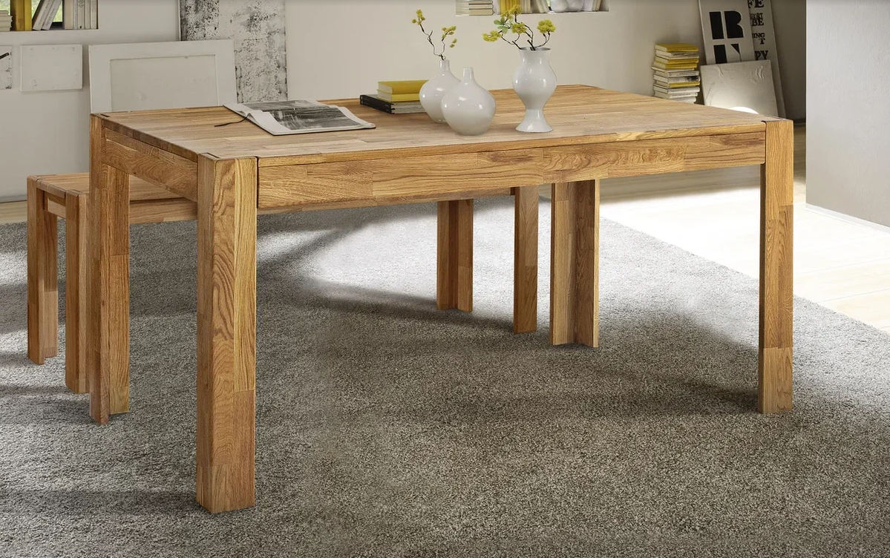
Дубовый стол — это стильный и функциональный элемент интерьера,
который станет прекрасным дополнением к вашему дому.
Изготовленный из массива дуба, этот стол обладает прочностью,
долговечностью и экологической чистотой.
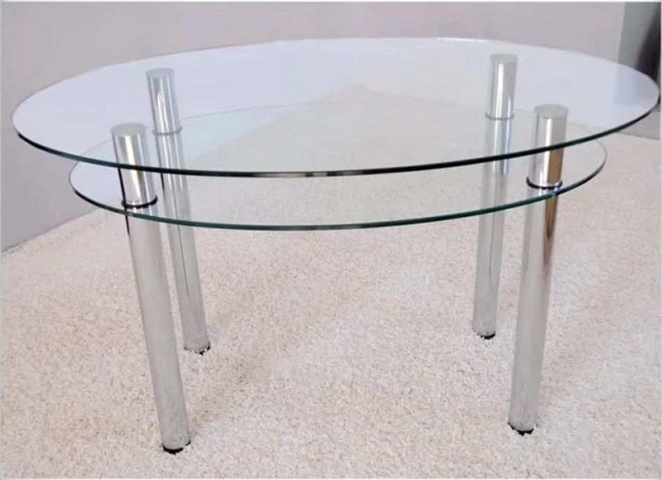
Стеклянный стол — это стильный и современный элемент интерьера,
который станет изюминкой вашего дома. Он изготовлен из
высококачественного закалённого стекла, которое обеспечивает прочность
и долговечность изделия.Благодаря прозрачности стекла, стол визуально
не загромождает пространство и добавляет лёгкости и воздушности
в интерьер.
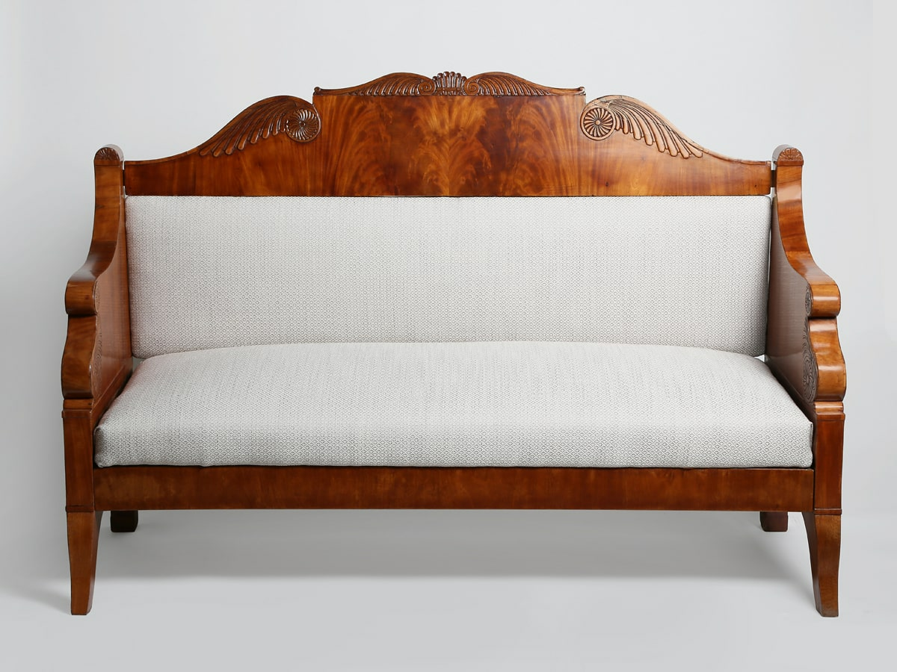
Диван из красного дерева — это роскошный предмет мебели,
изготовленный из высококачественных материалов. Он имеет элегантный дизайн,
который гармонично впишется в любой интерьер. Каркас дивана выполнен
из массива красного дерева, что придаёт ему прочность и долговечность.
Обивка из мягкой и приятной на ощупь ткани обеспечивает максимальный
комфорт при сидении.
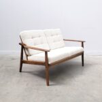
Дубовый диван — это стильное и функциональное решение для вашего интерьера.
Изготовленный из высококачественных материалов, этот диван станет
центром притяжения в вашем доме.
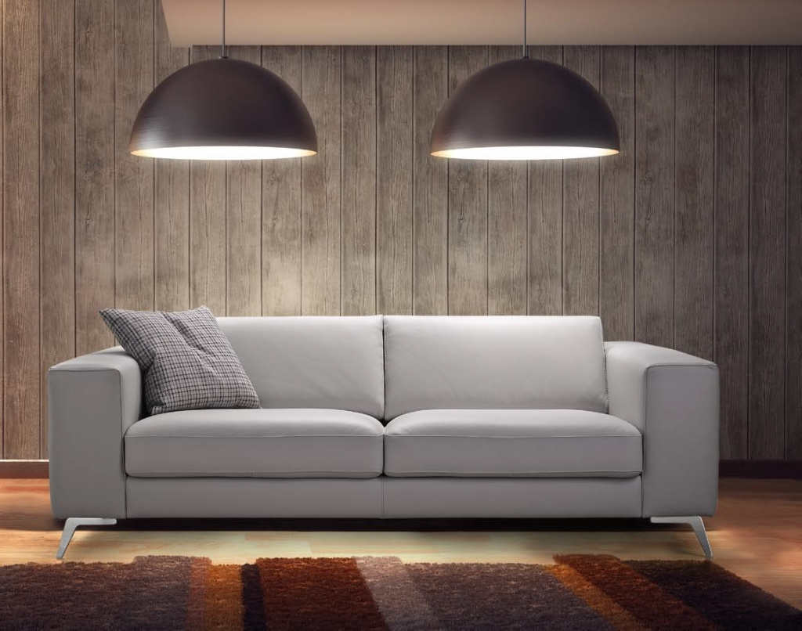
Диван в современном стиле — это функциональный и стильный элемент
интерьера, который сочетает в себе комфорт и эстетическую
привлекательность. Он идеально подходит для гостиной,
зоны отдыха или офиса, обеспечивая уютную атмосферу и способствуя
релаксации.
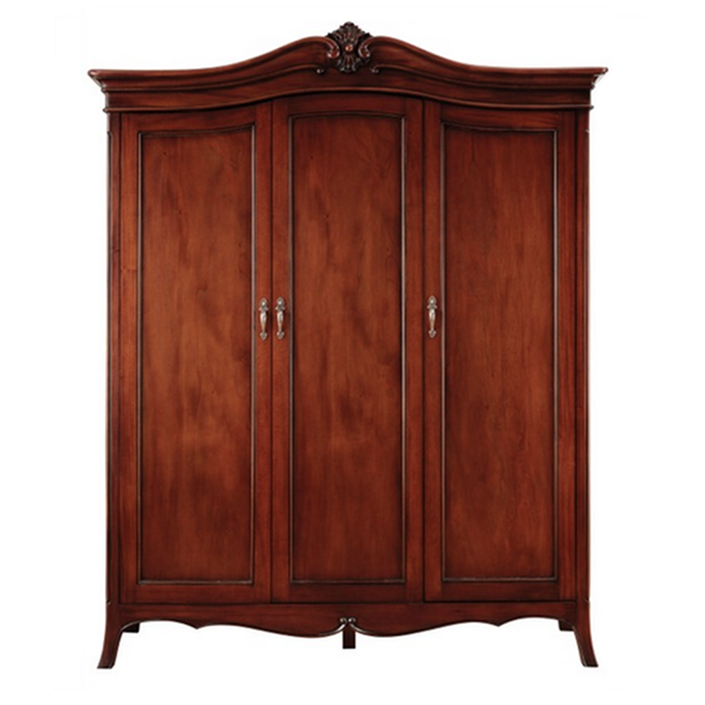
Шкаф из красного дерева — это элегантный и стильный предмет мебели,
который станет украшением любого интерьера. Изготовлен из высококачественных
материалов, он обладает прочностью, долговечностью и устойчивостью
к внешним воздействиям.
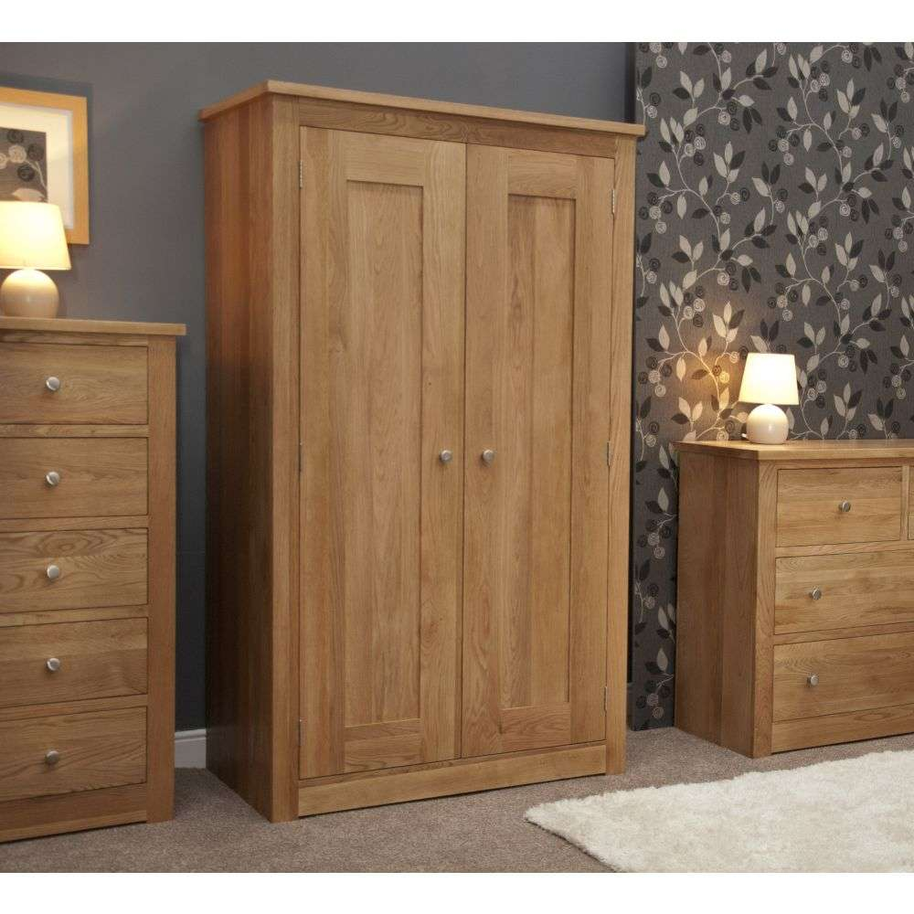
Дубовый шкаф — это функциональный и прочный предмет мебели,
предназначенный для хранения одежды и других вещей.
Изготовленный из дуба, одного из самых прочных видов древесины,
шкаф прослужит вам долгое время.
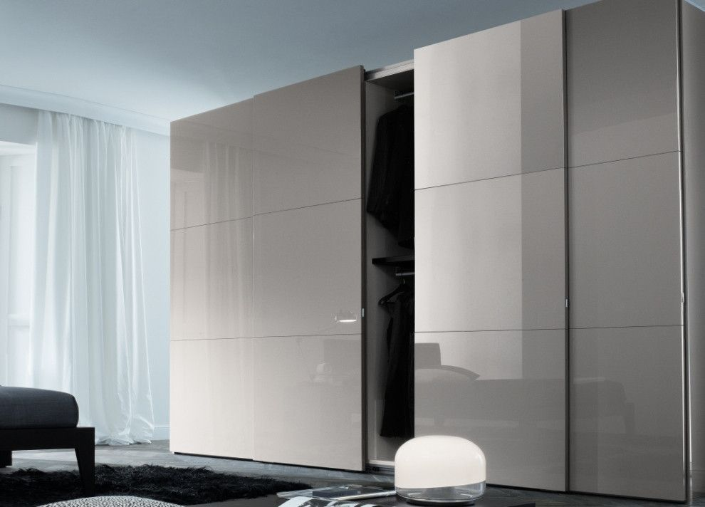
Хайтек-шкаф — это современное и стильное решение для хранения вещей.
Он сочетает в себе функциональность, удобство и эстетическую
привлекательность.
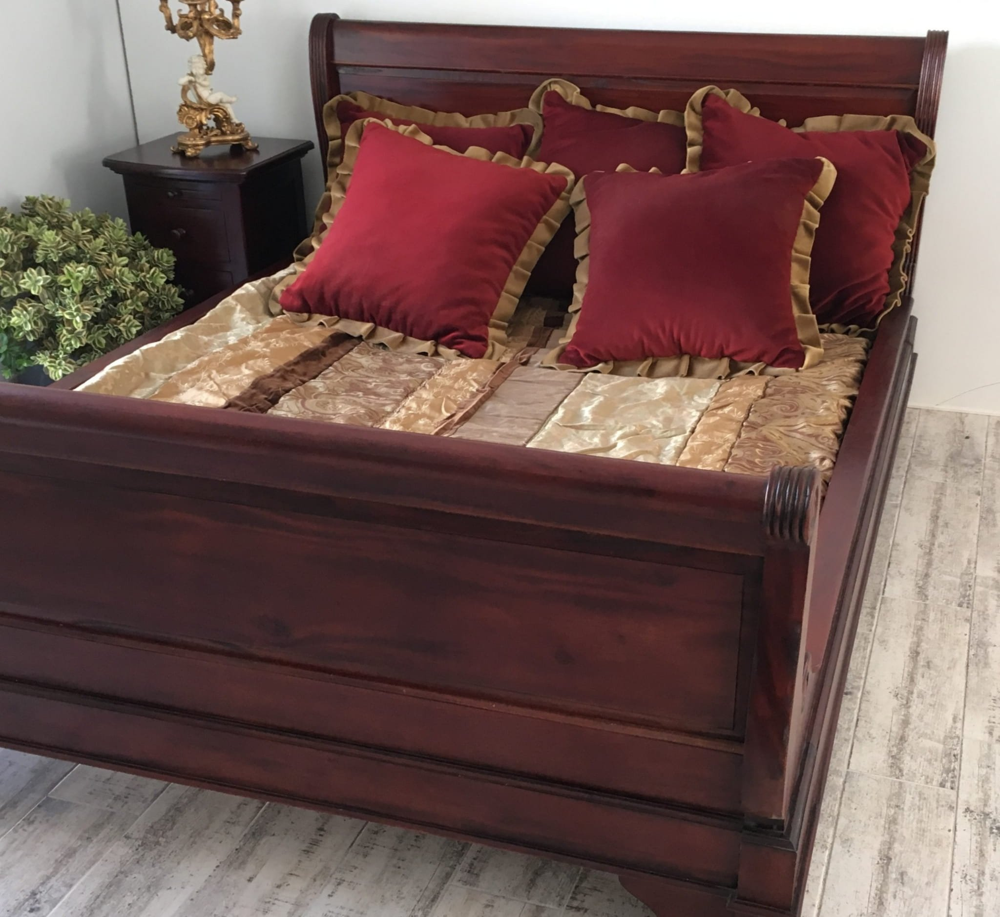
Кровать из красного дерева — это изысканное и роскошное спальное место,
созданное для тех, кто ценит комфорт и качество. Изготовленная из массива
красного дерева, эта кровать станет настоящим украшением спальни
и обеспечит здоровый сон.
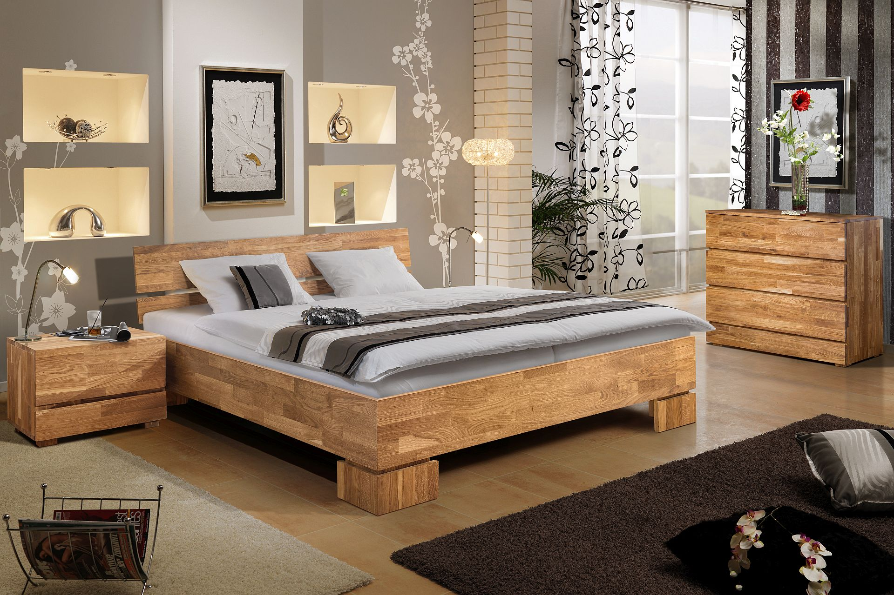
Дубовые кровати — это воплощение роскоши и комфорта. Они изготовлены из
высококачественных материалов и отличаются прочностью и долговечностью.
Благодаря своей уникальной текстуре и глубокому цвету, дубовые кровати
станут прекрасным дополнением любого интерьера.
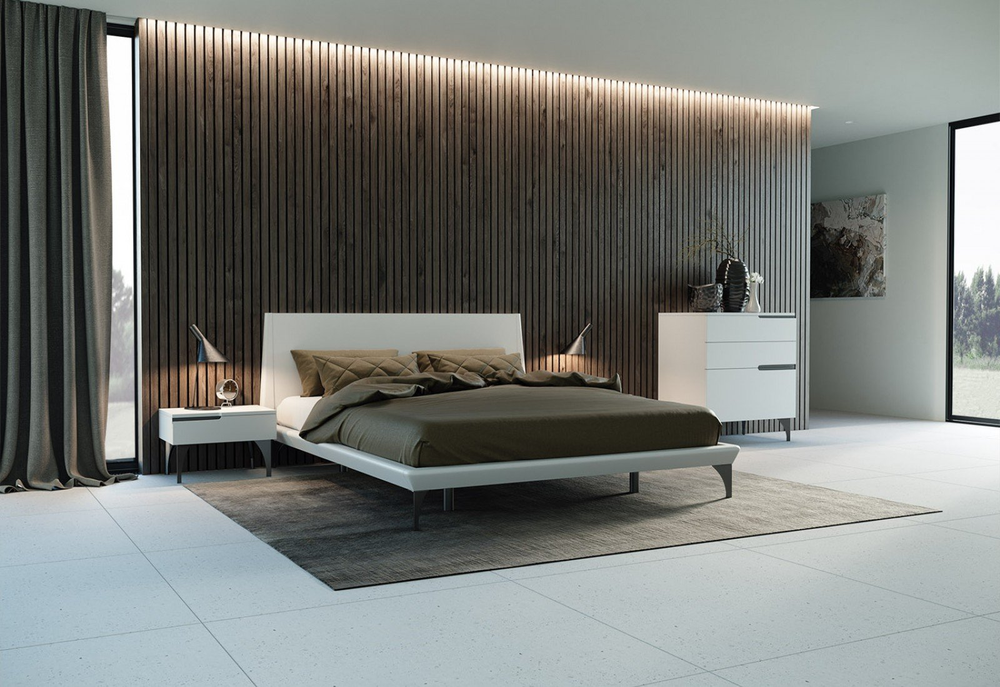
Хай-тек кровать — это воплощение современного стиля и комфорта.
Её элегантный дизайн и функциональность станут идеальным дополнением
к любому интерьеру. Благодаря своей уникальной форме и материалам,
эта кровать привнесёт в вашу спальню атмосферу роскоши и уюта.
О компании:
Компания "Blue Wood" - это производитель и поставщик высококачественной мебели
из качественного дерева. Наша компания специализируется на создании элегантной
и функциональной мебели, которая придает уют и стиль любому интерьеру.
Эл. почта:
mrOerg@gmail.com
Телефон:
8 938 109 89 49
@Copyright 2024|BLUEWOOD